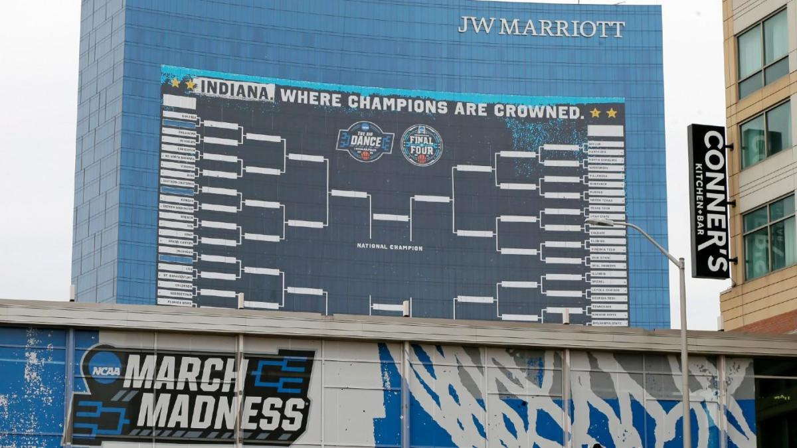
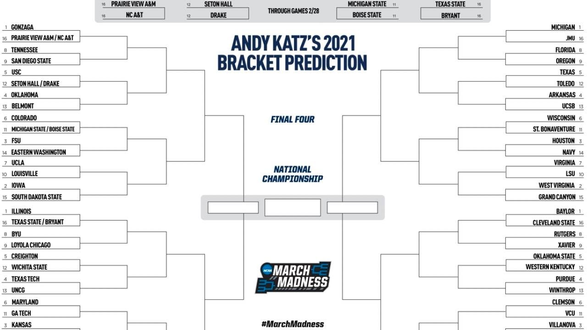

Oral Roberts
For the first time in 2 years March Madness is back and one of the greatest parts of March Madness is the unpredictability of the games and getting to learn the stories of the 64 individual teams.
Here are the first round results of a few of these notable teams and you can find out more about them and how they did moving forward in the tournament by clicking on their respective tabs.
